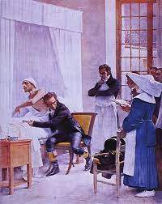

Nel Settecento,le condizioni igieniche erano disastrose. L'aria era inquinata dai fumi delle industrie; mancavano l'acqua potabile e le fognature; sporcizia e liquami si accumulavano lungo le strade, spesso non selciate. Ciò favoriva la diffusione di malattie infettive, come il vaiolo, il tifo, la scarlattina, la tubercolosi. Le conoscenze mediche erano limitate, e le misure preventive erano spesso rudimentali. La mortalità era molto elevata: un rapporto medico del 1842 stimava che a Liverpool la durata media della vita fosse di 35 anni per i borghesi e di soli 15 per le classi lavoratrici. Fra i bambini nati in città, 1 su 2 moriva prima di aver compiuto 5 anni. Quelli che sopravvivevano erano quasi sempre malnutriti; non di rado, i piccoli si ammalavano di rachitismo, una malattia che provocava gravi malformazioni ossee. La vaccinazione non c'era ancora solo Nel 1796, Edward Jenner introdusse il concetto di vaccinazione usando il virus del cowpox (variola bovina) per proteggere dall'infezione da vaiolo, segnando un progresso importante nella lotta contro le malattie infettive. La comprensione scientifica delle malattie infettive e le misure di controllo migliorarono gradualmente nel corso del tempo, preparando il terreno per progressi successivi nell'epidemiologia e nella medicina preventiva. l'inquinamento contemporaneo rappresenta una sfida globale che richiede azioni immediate e concrete per preservare la salute del pianeta e delle generazioni future. Solo attraverso un impegno collettivo e una responsabilità condivisa possiamo sperare di ridurre le conseguenze dannose dell'inquinamento e costruire un futuro più sano e sostenibile per tutti.